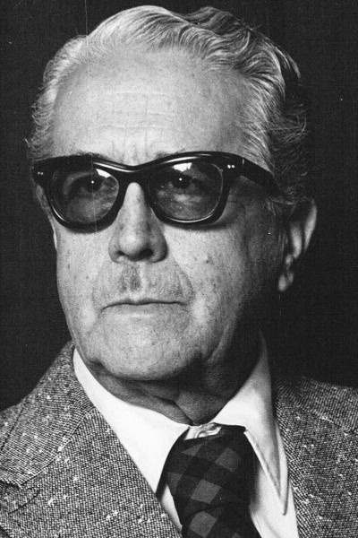

Jorge González Camarena (1908-1980)
Jorge González Camarena nació el 24 de marzo de 1908 en Jalisco. Tuvo siete hermanos, entre ellos, el famoso ingeniero Guillermo González Camarena, inventor de la televisión a color. Desde temprana edad tuvo contacto con las artes plásticas, solía tallar guijarros y esculturas de arcilla cuando era niño.
Ingresó a la Escuela Nacional de Artes Plásticas a los catorce años. Durante las primeras décadas del siglo XX, en Guadalajara, hubo un auge de las artes plásticas con artistas como Jorge Enciso, Roberto Montenegro y Gerardo Murillo, "Dr. Atl", de quien Camarena fue su ayudante. Perteneció a los círculos que impulsaron la renovación artística del México postrevolucionario, promotores iniciales de la pintura mural
González Camarena formó parte del movimiento estudiantil que en 1929 impulsó la llegada de Diego Rivera a la dirección de la Escuela Nacional de Bellas Artes, así como del consejo que formuló un plan de estudios más avanzado. A los 21 años realizó estudios de las culturas mesoamericanas, los cuales tendrían influencia en toda su producción posterior.
Preparaba sus pinturas con pigmentos naturales, inspirado en la técnica de los antiguos tlacuilos, personajes encargados de hacer los códices mexicas. Formó parte de la llamada "segunda generación de muralistas mexicanos", en 1939 realizó su primer mural y participó en la restauración de frescos del siglo XVI en Huejotzingo, Puebla.
Creó una técnica para organizar y dividir geométricamente el espacio pictórico, el "cuadrantismo". Entre sus obras más destacadas se encuentran las del Castillo de Chapultepec, el Instituto Politécnico Nacional, el edificio del Seguro Social, el Museo de Antropología e Historia y el Museo del Palacio de Bellas Artes. Camarena se caracterizó por realizar obras de gran colorido y por abordad temáticas históricas que abarcan desde la gran historia antigua de México hasta la segunda mitad del siglo XX.
Pintó obras en varios estados de la República y en Chile. Jorge González Camarena falleció el 24 de mayo de 1980 en la Ciudad de México.
Conoce su mural "Liberación" (1957-1963) en el MPBA.